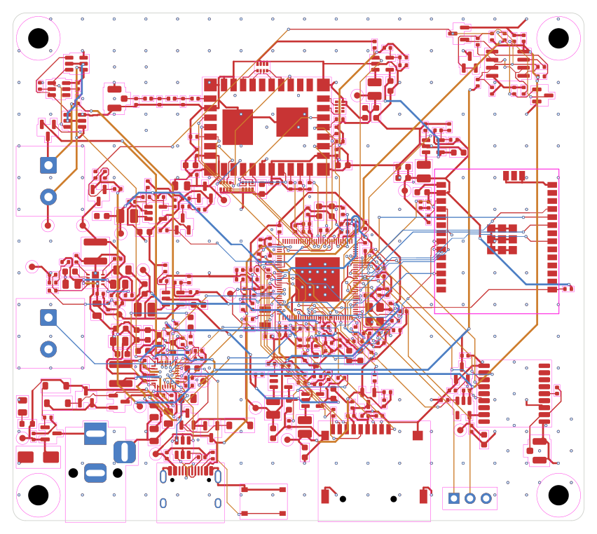

<title>Klepon Routing Worklist</title>
<link rel="stylesheet" href="https://fonts.googleapis.com/css2?family=Space+Grotesk:wght@500;600;700&family=IBM+Plex+Sans:wght@400;500;600&family=IBM+Plex+Mono:wght@400;500&display=swap">
<style>
/* Layout: one working column; an overview map, then gap cards grouped in the order to do them. Palette and type match the Klepon Rev 1 Design report. */
:root{
  --bg:#f4f6f3; --paper:#ffffff; --fg:#17201b; --muted:#56635b; --line:#d5ddd6;
  --mask:#1d6a46; --mask-soft:#e3efe7; --copper:#b4692c; --copper-soft:#f6e9dc; --mark:#0b7a8f; --sheet:#ffffff;
  --f-display:"Space Grotesk",ui-sans-serif,system-ui,sans-serif;
  --f-body:"IBM Plex Sans",ui-sans-serif,system-ui,sans-serif;
  --f-mono:"IBM Plex Mono",ui-monospace,SFMono-Regular,Menlo,monospace;
}
@media (prefers-color-scheme: dark){:root:not([data-theme="light"]){
  --bg:#101614; --paper:#17201c; --fg:#e4ebe6; --muted:#9aa89f; --line:#2b3732;
  --mask:#5fc08c; --mask-soft:#1c3328; --copper:#e09a5c; --copper-soft:#3a2a1c; --mark:#0b7a8f; --sheet:#f7f7f2; color-scheme:dark}}
:root[data-theme="dark"]{
  --bg:#101614; --paper:#17201c; --fg:#e4ebe6; --muted:#9aa89f; --line:#2b3732;
  --mask:#5fc08c; --mask-soft:#1c3328; --copper:#e09a5c; --copper-soft:#3a2a1c; --mark:#0b7a8f; --sheet:#f7f7f2; color-scheme:dark}
body{background:var(--bg);color:var(--fg);font-family:var(--f-body);font-size:15.5px;line-height:1.55}
.wrap{max-width:1120px;margin:0 auto;padding-left:max(16px,env(safe-area-inset-left,0px));padding-right:max(16px,env(safe-area-inset-right,0px));padding-block:0 4rem;display:grid;gap:2.4rem}
header{background:var(--paper);border-bottom:1px solid var(--line)}
header .wrap{padding-block:2rem 1.5rem;gap:.7rem}
.eyebrow{font-family:var(--f-mono);font-size:.78rem;letter-spacing:.08em;text-transform:uppercase;color:var(--copper)}
h1{font-family:var(--f-display);font-size:clamp(1.9rem,4.6vw,2.7rem);line-height:1.05;margin:0;letter-spacing:-.02em;text-wrap:balance}
h2{font-family:var(--f-display);font-size:1.35rem;margin:0;text-wrap:balance}
p{margin:0;max-width:70ch}
.lede{color:var(--muted);font-size:1.03rem}
.stats{display:flex;flex-wrap:wrap;gap:.5rem 1.4rem;font-family:var(--f-mono);font-size:.82rem;color:var(--muted)}
.stats b{color:var(--fg);font-weight:500}
nav.toc{position:sticky;top:env(safe-area-inset-top,0px);z-index:5;background:var(--bg);border-bottom:1px solid var(--line)}
body::before{content:"";position:fixed;inset:0 0 auto;height:env(safe-area-inset-top,0px);z-index:10;background:var(--bg)}
nav.toc .in{max-width:1120px;margin:0 auto;padding-block:.55rem;padding-left:max(16px,env(safe-area-inset-left,0px));padding-right:max(16px,env(safe-area-inset-right,0px));display:flex;flex-wrap:wrap;gap:.3rem 1.1rem;font-size:.86rem;align-items:center}
nav.toc a{color:var(--muted);text-decoration:none}
nav.toc a span{font-family:var(--f-mono);font-size:.78rem;color:var(--copper)}
nav.toc a:hover,nav.toc a:focus-visible{color:var(--mask);text-decoration:underline}
#progress{margin-left:auto;font-family:var(--f-mono);font-size:.8rem;color:var(--mask)}
.panel{background:var(--paper);border:1px solid var(--line);border-radius:6px;padding:1.1rem 1.2rem;display:grid;gap:.6rem;min-width:0}
.steps{display:grid;grid-template-columns:repeat(auto-fit,minmax(min(100%,300px),1fr));gap:1rem}
.steps ol{margin:0;padding-left:1.2rem;display:grid;gap:.3rem}
code{font-family:var(--f-mono);font-size:.86em}
.map{background:var(--sheet);border:1px solid var(--line);border-radius:6px;padding:.5rem}
.map .in{position:relative}
.map img{display:block;width:100%;height:auto}
.map svg{position:absolute;inset:0;width:100%;height:100%}
.map circle{fill:var(--mark);stroke:#ffffff;stroke-width:.25}
.map text{font:600 1.3px var(--f-mono);fill:#ffffff;text-anchor:middle}
.map a:focus-visible circle{stroke:#000000;stroke-width:.5}
.legend{display:flex;flex-wrap:wrap;gap:.4rem 1.2rem;font-size:.82rem;color:var(--muted)}
.legend i{display:inline-block;width:.9em;height:.9em;border-radius:2px;margin-right:.35em;vertical-align:-.1em}
.group{display:grid;gap:1rem}
.ghead{display:grid;gap:.25rem}
.ghead p{color:var(--muted)}
.cards{display:grid;grid-template-columns:repeat(auto-fill,minmax(min(100%,500px),1fr));gap:1rem}
.card{display:grid;grid-template-columns:minmax(0,190px) minmax(0,1fr);gap:1rem;background:var(--paper);border:1px solid var(--line);border-radius:6px;padding:.9rem}
.card.is-done{opacity:.55}
@media (max-width:520px){.card{grid-template-columns:1fr}}
.crop{position:relative;margin:0;align-self:start}
.crop img{display:block;width:100%;height:auto;border-radius:4px;background:var(--sheet)}
.crop svg{position:absolute;left:0;top:0;width:100%;aspect-ratio:1/1}
.crop circle{fill:none;stroke:var(--mark);stroke-width:1.1}
.crop text{font:600 5px var(--f-mono);fill:var(--mark);paint-order:stroke;stroke:#ffffff;stroke-width:1.2}
.crop figcaption{font-family:var(--f-mono);font-size:.72rem;color:var(--muted);margin-top:.25rem}
.nocrop{background:var(--mask-soft);border-radius:4px;padding:.8rem;font-size:.85rem;color:var(--muted);aspect-ratio:1/1;display:flex;align-items:center}
.body{display:grid;gap:.55rem;align-content:start;min-width:0}
.head{display:flex;align-items:center;gap:.6rem;flex-wrap:wrap}
.k{font-family:var(--f-mono);font-weight:500;font-size:.8rem;background:var(--copper-soft);color:var(--copper);border-radius:4px;padding:.05rem .45rem}
.net{font-weight:500;word-break:break-all}
.done{margin-left:auto;font-size:.85rem;color:var(--muted);display:flex;gap:.35rem;align-items:center;cursor:pointer}
.done input{accent-color:var(--mask);width:1rem;height:1rem}
.done input:focus-visible{outline:2px solid var(--mask);outline-offset:2px}
dl{display:grid;grid-template-columns:auto 1fr;gap:.15rem .7rem;margin:0;font-size:.9rem}
dt{font-family:var(--f-mono);font-size:.78rem;color:var(--mark);padding-top:.1rem}
dd{margin:0;min-width:0}
.lay{font-family:var(--f-mono);font-size:.76rem;color:var(--muted)}
.xy{font-family:var(--f-mono);font-size:.82rem;font-variant-numeric:tabular-nums}
.hint{font-size:.92rem}
footer{color:var(--muted);font-size:.85rem}
</style>
<header><div class="wrap">
  <div class="eyebrow">Klepon Rev 1 · PCB layout · T26</div>
  <h1>The last 24 connections to route</h1>
  <p class="lede">Everything else on the board is routed and passes DRC. Each of these 24 needs one small edit the automatic tools couldn’t make, usually moving one via or adding a short stub. Do them with KiCad’s interactive router, then report back for the checks and the quality pass.</p>
  <div class="stats"><span><b>475 / 499</b> connections routed</span><span><b>0</b> clearance, short or hole errors</span><span><b>0</b> schematic mismatches</span><span>board <code>hardware/kicad/klepon.kicad_pcb</code></span></div>
</div></header>
<nav class="toc" aria-label="Groups"><div class="in">TOCLINKS<span id="progress" aria-live="polite"></span></div></nav>
<main class="wrap">
  <section class="steps">
    <div class="panel"><h2>Before you start</h2><ol>
      <li>Open <code>hardware/kicad/klepon.kicad_pro</code> in KiCad 10. The scripts have closed their copy, so your edits won’t be overwritten.</li>
      <li>The rules are already set. Default 0.12 mm track and clearance, vias 0.4/0.2 mm. U100 supplies (SoCPower) 0.2 mm. Power 0.3 mm. USB pair 0.155 mm with a 0.127 mm gap.</li>
      <li>Keep In1 (layer 2) solid ground: tracks go only on top, In2 and bottom.</li>
      <li>Use the interactive router (<code>X</code>) with “use net class width”. Refill zones (<code>B</code>) after each group.</li>
    </ol></div>
    <div class="panel"><h2>When you’re done</h2><ol>
      <li>Save, close KiCad and report back. DRC with the schematic-parity check runs next.</li>
      <li>Then the quality pass: USB as a coupled 90 Ω pair, SD and HaLow SDIO length matching, wider charger, boost and battery paths.</li>
      <li>Last: sweep the 14 dangling vias and 5 dangling tracks, tidy the silkscreen, final DRC, production files, report update.</li>
    </ol></div>
  </section>
  <section class="group" id="map"><div class="ghead"><h2>Where they are</h2><p>Click a number to jump to its card. Rows 3 and 5 are fill pieces with no single location, so they aren’t marked.</p></div>
    <div class="map"><div class="in">
    <svg viewBox="98 98 94 84" preserveAspectRatio="none">MARKERS</svg></div></div>
    <div class="legend"><span><i style="background:#c83434"></i>F.Cu (top)</span><span><i style="background:#c87b2c"></i>In2.Cu</span><span><i style="background:#4d7fc4"></i>B.Cu (bottom)</span><span>Fills hidden so the tracks show. In1, the solid GND plane, isn’t drawn.</span></div>
  </section>
  SECTIONS
  <footer>Generated 2026-11-21 from kicad-cli DRC with zones refilled. Same list as <code>docs/reports/t26-unrouted.md</code>. Crops show F.Cu, In2.Cu and B.Cu with part outlines. A and B are the two ends KiCad reports for each gap.</footer>
</main>
<script>
(function(){
  var KEY = 'klepon-worklist-done', done = {};
  try { done = JSON.parse(localStorage.getItem(KEY) || '{}') || {}; } catch (e) { done = {}; }
  var boxes = document.querySelectorAll('.done input'), prog = document.getElementById('progress');
  function paint(){ var n = 0; boxes.forEach(function(b){ b.closest('.card').classList.toggle('is-done', b.checked); if (b.checked) n++; }); prog.textContent = n + ' / ' + boxes.length + ' done'; }
  boxes.forEach(function(b){ b.checked = !!done[b.id]; b.addEventListener('change', function(){ done[b.id] = b.checked; try { localStorage.setItem(KEY, JSON.stringify(done)); } catch (e) {} paint(); }); });
  paint();
})();
</script>
